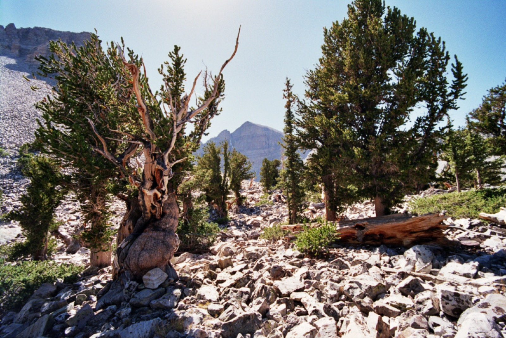

Free • BLM/NF

Nevada • ~1 to 4 hrs from Vegas
Great Basin & NV back-country BLM
Your fastest escape from Vegas. Nevada is mostly BLM, so dispersed vehicle camping is legal by default unless posted closed. Aim for the flanks of the Snake Range near Great Basin NP (Humboldt-Toiyabe NF) for real alpine backdrops.
CostFree
Stay limit14 days / 28, then move ~25 mi (BLM); 14 days (Humboldt-Toiyabe NF)
NoteNo vetted named site survived checking here, use the BLM/NF default rules and pick a spot on the ground